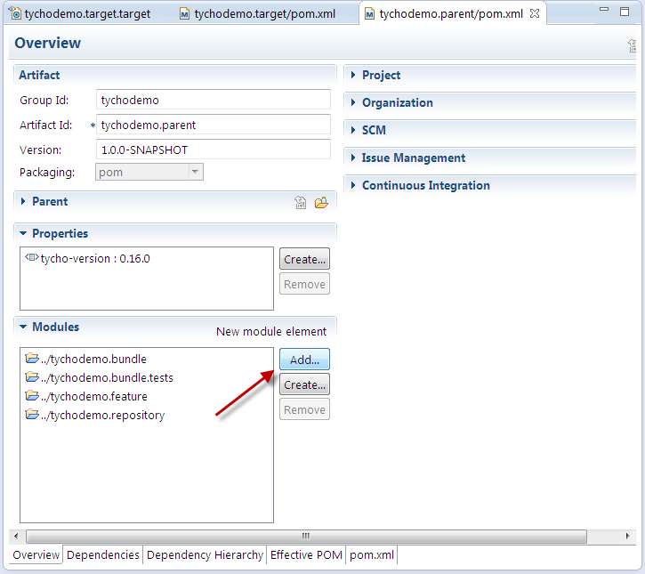
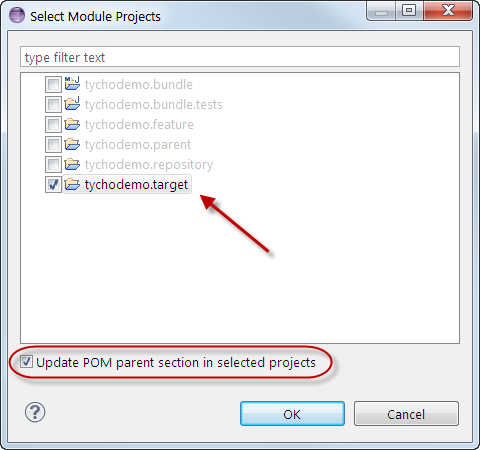

<Previous Exercise
| TOC
Exercise 6: Use a target file
In this exercise, we will ensure that others can also develop the project by using a target definition file as target platform in Eclipse (instead of the "Running Platform").
Then we will re-use the target file for the target platform in the Tycho build.
Recovery option
This section is optional and only needed if you want to catch up from exercise 5 or reset your workspace.
Creating a target definition file for Eclipse
In the Eclipse workspace, the plug-ins currently compile against the running Eclipse installation.
This may lead to problems if other developers use a different version of Eclipse.
As first part of this exercise, we will make the project portable by defining the Eclipse target platform through a target file.
- Create a new general project tychodemo.target:
- CTRL+N > General > Project

- Enter the project name tychodemo.target and hit Finish

- In the tychodemo.target project, create a new, empty target definition called tychodemo.target.target:
- CTRL+N > Plug-in Development > Target Definition

- Enter the file name tychodemo.target.target and hit Finish

- In the editor for the tychodemo.target.target, add the Eclipse RCP SDK feature from the Juno repository http://download.eclipse.org/releases/juno/
Note: If you are not connected to the Internet, use your local copy of the p2 repository from the USB stick instead. This p2 repository contains a subset of the Juno repository.
- Click Add...
- Select Software Site and click Next >

- In the Work with field, paste the URL http://download.eclipse.org/releases/juno/ and press ENTER. Wait until the repository content is shown.

- Deselect Group by Category, enter Eclipse RCP in the filter text box and select the Eclipse RCP SDK feature. Hit Finish.

- Set the target definition as target platform:
- Wait until the target definition is resolved (optional). Click Set as Target Platform

- This leads to a compilation problem: Bundle 'org.junit' cannot be resolved

- We need to add the JUnit bundle to the target platform. Do this by adding the Eclipse Java Development Tools feature:
- In the editor of tychodemo.target.target, select the p2 repository URL under Locations and click Edit...
- If the dialog displays an error message, close the dialog and open it again by clicking Edit... (cf. bug 275999)

The status text below the features list should be 1 item selected
- Enter Java Dev in the search text box and select the one feature from the list. Do not click finish yet!

- Clear the filter text box – the status text below the features list should now say 2 items selected (cf. bug 309136). Hit Finish.

- Once the target definition is resolved, the editor shows two features under the p2 repository URL

- Set the target definition as target platform. The compile error should now be resolved.
- Save the tychodemo.target.target file
Using the same target definition in the Tycho build
Now that we have a target definition file, we can use that file for the target platform configuration in Tycho. With such a setup, we can be certain that both Eclipse and Tycho use the same target platform.
- Add the tychodemo.target project to the build (with packaging type eclipse-target-definition):
- Right-click on tychodemo.target > Configure > Convert to Maven Project
- Enter the group ID tychodemo, version 1.0.0-SNAPSHOT and packaging eclipse-target-definition

- Open the pom.xml of tychodemo.parent and click on Add... in the Modules section

- Select the tychodemo.target module, select Update POM parent section in selected projects, and hit OK

- Configure the build to use the target definition in tychodemo.target as target platform:
- Run the build of tychodemo.parent, e.g. by selecting tychodemo.parent from the run history
The expected result is a build failure – the root cause can be seen at the start of the [ERROR] log output:

- The product build needs the org.eclipse.equinox.executable feature, which contains the native launchers. Add this feature in the target file:
- In the editor of tychodemo.target.target, select the p2 repository URL and click Edit...
- If the dialog displays an error message, close the dialog and open it again by clicking Edit...
- Type executable in the search text box and select the one feature from the list

- Clear the filter text box – the status text below the features list should now say 3 items selected. Hit Finish.

- Once the target definition is resolved, the editor shows three features under the p2 repository URL
- Save the tychodemo.target.target file
- Run the build of tychodemo.parent again, e.g. by selecting tychodemo.parent from the run history. The build should now be successful again.
This concludes this exercise. To recapitulate our achievements:
- We have created a target definition file in order to ensure that all developers of the project use the same target platform.
- We have re-used the target definition file in the Tycho build configuration to have the same target platform in Tycho as in Eclipse.
- We have now the possibility to manage the project's dependencies.
Congratulations: You have now completed the Tycho tutorial. You now may want to
<Previous Exercise
| TOC